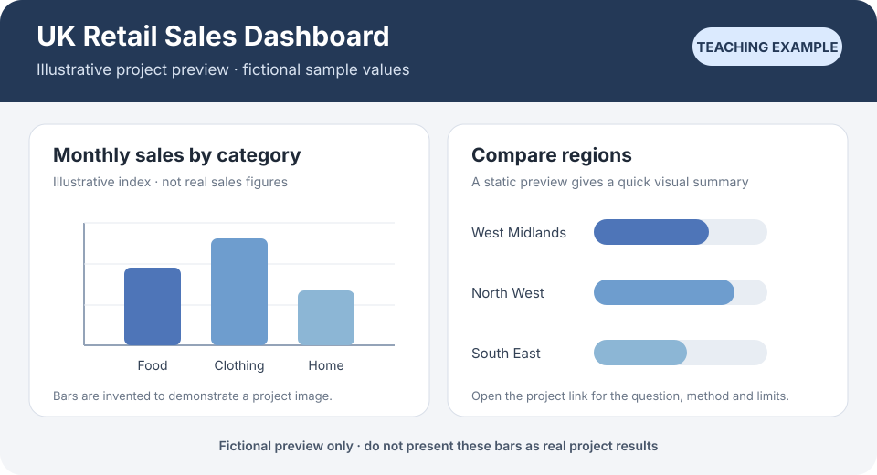

Study three public profiles first. Then build Riya Ahmed’s fictional profile in three phases. Open a phase, choose one task, follow the example and check what changed.
Use examples as a guide, not a template. Notice the structure and choices. Write your own truthful story and link to work you can explain. The build-along profile in this guide is fictional; LinkedIn editing screens are labelled illustrations.
EXAMPLES
Three real profiles to study
Take in each introduction card as a whole. Then notice one choice that could help a graduate explain their direction or point to evidence. These are inspiration, not templates.
Example 1 · Thomas (Tafafa) Anthonio
Notice the headline sequence
Target role → work area → selected tools → intended contribution. His headline is long, so copy the sequence of ideas, not its length. A claim in a headline needs supporting evidence elsewhere.
Riya will use this in: Phase 1, when she chooses her headline.
Her headline connects a biotechnology background with a data analyst direction. It makes the transition understandable. It also lists several tools; a learner should choose only the tools they can explain with evidence.
Riya will use this in: Phase 2, when she connects education work and analytics learning.
A portfolio address appears in the banner, but the small text is hard to read. Riya will make her project easier to open by using the Featured section with a clear title and description.
Riya will use this in: Phase 2, when she adds project evidence.
We have seen the choices. Now we will build them: a clear introduction, a story that connects past and future, and a project visitors can inspect. Open one phase at a time and follow its task panels.
The screenshots show public introduction cards captured on 29 October 2026. Profiles can change. They illustrate visible design choices; the guide does not verify the members’ claims.
BUILD ALONG
Now build Riya Ahmed’s profile
Riya is Esmat’s fictional graduate character. We will build her LinkedIn profile from an unfinished starting point, one phase at a time. Her story, role and project are invented teaching examples; use the method, then replace every detail with your own truthful evidence.
See Riya’s starting point
Riya’s profile is almost empty. She has a name, her current job title and a broad location. There is no photo, custom banner, target headline, About story, Experience section or project to inspect.
👤
Riya Ahmed
Secondary School Teacher at Example School
West Midlands, England
Riya’s fictional starting profile. The job title is visible, but her next direction and supporting evidence are not.
What is already there?
Name: Riya Ahmed.
Current job title: Secondary School Teacher at Example School.
Location: West Midlands, England.
What is missing?
A photo and a clear first impression.
A specific target role and location.
A story connecting past work to data analysis.
Evidence a visitor can inspect.
Starting point: Riya has real transferable experience in her fictional story, but the profile has not yet explained it. We will add only the evidence taught in each phase.
Where Riya starts
No profile photo or custom banner.
The headline is only her current job title.
The location is broad: West Midlands, England.
About, Experience, Education, Skills and Featured are not yet shown.
PHASE 01
Make the first screen clear
Outcome: Riya’s introduction names the role she is moving towards and gives a specific, honest location. She adds a photo; she leaves the banner blank until she has a useful image.
Plan Riya’s profile from evidence
The whole guide follows one rule: make claims you can sustain. Be direct about where you are going, what you can do and what you intend to do. Back each claim with an example of what you have done.
Before writing, gather a few details you can support. This keeps the profile coherent and stops a list of tools from standing in for evidence.
Name one or two entry-level roles you would genuinely consider.
Choose the place or work pattern you can honestly offer.
Pick one previous responsibility that shows a useful strength, such as checking records or explaining a pattern.
List the tools you have actually practised and where you used each one.
Choose a project you are allowed to share. Note its question, data, method, result, limitation and your contribution.
Riya · fictional example
Riya’s planning note
Target: entry-level Data Analyst roles across the West Midlands, hybrid or remote.
Base: Birmingham, England.
Transferable evidence: in her former education role, Riya kept records, checked progress and explained patterns to colleagues.
New evidence: course practice with Python, Pandas and Tableau.
Project: a Tableau practice dashboard comparing invented monthly retail totals by category and region. Its sample values show differences; they do not explain causes.
Your result: a short evidence plan to keep beside you while you write.
Write a headline and choose a precise location
The introduction card is the first profile area visitors see. It shows your name, headline, location and current position or education. Start by making the target role and location easy to understand.
Use the profile controls
Add section creates a section that is missing. The plus icon adds an item inside a section that already exists. The pencil icon edits information already on your profile.
See Riya’s profile before the edit
👤
Riya Ahmed
Secondary School Teacher at Example School
West Midlands, England
Open to
Add section
Enhance profile
Resources
✎
This is Riya’s starting state. Select the pencil on the introduction card to edit her headline and location.
Headline · weak → why → stronger
First attempt
“Code Institute Data Analytics with AI Graduate | Aspiring Data Analyst | Python, Pandas, Tableau”
Why it’s weak
“Aspiring” sounds like a wish rather than a commitment. The course comes before the job Riya wants, and the list of tools needs evidence elsewhere.
Stronger version
“Entry-level Data Analyst | Code Institute Data Analytics with AI | Python, Pandas, Tableau”
This names the target role first, keeps the course context and lists only the tools Riya will connect to practice later. Use this wording only if you can support each skill with an example.
Entry-level Data Analyst | Code Institute Data Analytics with AI | Python, Pandas, Tableau
Location · weak → why → stronger
First attempt
“West Midlands, England”
Why it’s weak
It could mean anywhere across a 60-mile spread. An employer cannot tell where Riya is based or what she can commute to.
Stronger version
“Birmingham, England, United Kingdom”
Riya can still explain that she is looking for roles across the West Midlands, hybrid or remote. That separates her home base from the area and work patterns she will consider.
On LinkedIn, open Me → View profile, select the pencil on the top introduction card, enter the stronger headline and city, then save. LinkedIn may show the city and country in separate fields.
See the stronger values entered in Edit intro
Edit intro
Riya
Ahmed
Entry-level Data Analyst | Code Institute Data Analytics with AI | Python, Pandas, Tableau
United Kingdom
Birmingham
Illustrative form. After saving, LinkedIn displays the location as “Birmingham, England, United Kingdom”. Other fields may vary by account.
Check your name and location.
Enter a target role first, then add only skills you can support with examples.
Save and compare the displayed headline and location with your chosen wording.
✓
Expected result: the first screen makes Riya’s next direction and base clear, without changing her current job title.
Add an optional profile photo and banner
A profile photo and a background banner are separate, optional parts of the introduction card. Riya adds the fictional teaching portrait so readers can see how it sits in the profile. She leaves the banner blank for now; Phase 3 will add one with a clear purpose.
Add a photo if you want one
Select the camera or edit control on the photo area.
Choose an image you are comfortable sharing, then adjust the crop so your face is easy to recognise.
Save and check the circular crop at small size.
A clear head-and-shoulders image, natural light and an uncluttered background can make the face easier to see. A photo is optional.
Add a banner if it helps
Select the camera or edit control on the background area.
Upload or choose a wide image and adjust it in LinkedIn’s preview.
Check the crop on a phone and keep important detail clear of the overlapping profile photo.
Use a banner only when it adds useful context. Leaving it blank is a sound choice until you have an image that supports your direction.
Riya · fictional example
Fictional teaching image: Riya’s portrait is an illustration, not a real LinkedIn member. It demonstrates the crop; it does not imply that a photo is required.
✓
Check the result: return to the profile. Riya’s photo is clear at small size, her headline remains readable and no custom banner has been added yet.
See Riya’s profile after Phase 1
Riya Ahmed
Entry-level Data Analyst | Code Institute Data Analytics with AI | Python, Pandas, Tableau
Birmingham, England, United Kingdom · Secondary School Teacher at Example School
Fictional LinkedIn-style teaching mockup. The portrait and profile text are invented; this is not a real account.
What changed in Phase 1
Added an optional fictional profile photo.
Replaced the job-title-only headline with the target-role headline.
Changed the broad location to Birmingham, England, United Kingdom.
Kept the banner blank; About and evidence sections are still to come.
PHASE 02
Connect the story to evidence
Outcome: a visitor can follow Riya’s move from education to data analysis and inspect work she can explain. Her Phase 1 headline and Birmingham location stay unchanged.
Format LinkedIn text and project visuals correctly
LinkedIn profile fields such as Headline and About are plain-text fields. Markdown markers do not create bold text, headings or embedded images there. GitHub README files do render Markdown.
In a GitHub README
**Python and Pandas**

GitHub displays the words in bold. A Markdown image can display an image saved in the repository.
In LinkedIn About
**Python and Pandas**

The asterisks remain visible. Markdown image syntax does not insert a graphic into About.
Write short paragraphs in About. Put a project image, document or link in Featured, or link to the GitHub page that shows the complete project. The available file types depend on LinkedIn’s upload picker.
Use the two guides together: explain and illustrate the project in GitHub; use LinkedIn’s plain text to introduce it and Featured to point to it.
“I am a data analyst with strong Python, Pandas and Tableau skills.”
Why it’s weak
Riya has not held a data analyst role, and “strong” is not backed by an example. The sentence hides the career change and makes a visitor guess what she has done.
Stronger version
“I’m moving from education into data analysis. In my previous role, I kept records, checked progress and explained patterns to colleagues.”
The stronger opening names her direction and gives a concrete example of transferable work. It makes no claim that she already worked as an analyst.
Write the full About section
If About is missing, select Add profile section → Core → About. If it is already present, open its pencil icon. Use short paragraphs to connect past work, recent practice and the roles you want.
Add to profile · Core
About＋
Position＋
Education＋
Illustrative Add profile section menu. Choose About if it is missing; edit the existing About section instead of adding a second one.
Riya · fictional example
Riya’s About section
I’m moving from education into data analysis. In my previous role, I kept records, checked progress and explained patterns to colleagues.
In my Code Institute Data Analytics with AI course, I practised Python and Pandas to prepare data and Tableau to present it. My Tableau practice dashboard compares invented monthly retail totals by category and region. It shows differences in its sample values; it does not explain their causes.
I’m based in Birmingham and looking for entry-level data analyst roles across the West Midlands, hybrid or remote.
Save, return to the profile and read the opening before expanding “see more”. A visitor should understand the direction without having to infer it. Riya’s wording is fictional; replace it with your own evidence.
Experience · weak → why → stronger
First attempt
“Planned lessons, tracked progress, updated records, supported learners and met parents.”
Why it’s weak
The list names many duties but does not show what Riya checked, what she noticed or how she used the information. A reader cannot see the connection to careful data work.
Stronger version
“Maintained attendance, assessment and coursework records. Reviewed the records regularly to spot progress patterns. Summarised relevant findings so colleagues could discuss where support might help.”
This wording keeps Riya’s real job title and explains the evidence behind the transferable skills. Use it only if it reflects your own work.
If Experience is missing, choose Add profile section → Core → Add position. If it is already present, use its plus icon to add a role or its pencil to edit one. Keep the job title, organisation and dates accurate, and check any network notification before saving.
Add position · fictional example
Secondary School Teacher
Example School
2020–2025 · fictional dates
Maintained attendance, assessment and coursework records. Reviewed the records regularly to spot progress patterns. Summarised relevant findings so colleagues could discuss where support might help.
Illustrative entry form. The wording and dates belong to Riya’s fictional teaching example.
✓
Check the result: the saved title remains Secondary School Teacher; the description names records, review and how colleagues used the summary.
Add Riya’s education and evidence-linked skills
Add the course accurately
If Education is missing, choose Add profile section → Education. If it is already there, use plus to add an entry or the pencil to edit one. Enter the provider, programme name and accurate dates. Do not call a course a degree unless it awarded one.
Add education · fictional example
Code Institute
Leave blank if no degree was awarded
Data Analytics with AI
2026 · fictional year
Practised Python and Pandas to prepare project data and Tableau to present invented sample totals.
Illustrative form. Riya’s provider, course and completion year are part of the fictional example.
Skills · weak → why → stronger
First attempt
“Python, Pandas, NumPy, Feature Engineering, Matplotlib, Seaborn, Plotly, Tableau and Data Visualisation.”
Why it’s weak
A long list can make every skill sound equally practised. Without examples, a visitor cannot tell what Riya has actually used.
Stronger version
“Python and Pandas → course notebooks and project data preparation. Tableau → Riya’s practice dashboard.”
If Skills is missing, select Add profile section → Core → Skills. Add only skills you have practised and can explain. Link each skill to a course, project or role when LinkedIn offers that option.
Skills
PythonPandasTableau
Illustrative Skills section. The list matches the evidence named in Riya’s About and project.
✓
Check the result: Education names the course accurately; the Skills list contains Python, Pandas and Tableau, each connected to practice.
Choose how visitors can see Riya’s work and add Featured
Featured gives visitors a route to work they can open or inspect. Choose a format that suits the evidence.
Link
Use a link to a complete GitHub project page, README or live dashboard when the visitor needs the full method and context.
Image
Use one readable chart or graphic as a quick preview. Give it a clear title and say what its values represent.
Document
Use a short report when the work is best understood as a document. Check that it is readable on screen.
Post or article
Use these to explain your question or learning in your own words. Link to the full project when the reader needs more detail.
Riya · fictional example
Riya’s choice: link to the full project page and use the image as a separate preview. The image helps a visitor see the kind of work; the project page explains how she made it.
Keep the source graphic in GitHub if it is an SVG. Link to the page that displays it, or export a PNG for a static LinkedIn preview if the current upload flow accepts it.
Featured description · weak → why → stronger
First attempt
“I analysed public sales data and found the causes of growth.”
Why it’s weak
Riya’s teaching dashboard uses invented sample values, not public sales data. Comparing values also cannot establish what caused them.
Stronger version
“A Tableau practice dashboard comparing invented monthly retail totals by category and region. The sample shows differences in its values; it does not explain their causes.”
If Featured is missing, choose Add profile section → Recommended → Add Featured. If it exists, select its plus icon. Choose Add a link, enter the real project URL, then add the title and stronger description.
Add to profile
Featured＋
Step 1 · Add Featured if it is missing.
Add to Featured
Add a link
Add an image
Add a document
Step 2 · Choose the item type. Post or article options can vary by account and interface.
Add a link · fictional example
Fictional GitHub project URL · replace with your working project link
UK Retail Sales Dashboard
A Tableau practice dashboard comparing invented monthly retail totals by category and region. The sample shows differences in its values; it does not explain their causes.
Step 3 · Enter Riya’s fictional example. In your profile, use a link you have opened and checked.
Riya’s example destination is intentionally not a working link. In your profile, use a link you have opened and checked.
✓
Check the result: open the destination while signed out if possible. Confirm that the page explains your question, method, result, limitations and contribution.
To add a static image as a separate Featured item, use the add menu again and choose Add an image. Check its crop and preview. Keep the link nearby so a visitor can inspect the full project.
See Riya’s profile after Phase 2
Riya Ahmed
Entry-level Data Analyst | Code Institute Data Analytics with AI | Python, Pandas, Tableau
Birmingham, England, United Kingdom · Secondary School Teacher at Example School
About
I’m moving from education into data analysis. In my previous role, I kept records, checked progress and explained patterns to colleagues.
In my Code Institute Data Analytics with AI course, I practised Python and Pandas to prepare data and Tableau to present it. My Tableau practice dashboard compares invented monthly retail totals by category and region. It shows differences in its sample values; it does not explain their causes.
I’m based in Birmingham and looking for entry-level data analyst roles across the West Midlands, hybrid or remote.
Experience
Secondary School Teacher · Example School · 2020–2025 (fictional dates)
Maintained attendance, assessment and coursework records. Reviewed the records regularly to spot progress patterns. Summarised relevant findings so colleagues could discuss where support might help.
Education
Code Institute · Data Analytics with AI · 2026 (fictional year)
Skills
PythonPandasTableau
Featured
UK Retail Sales Dashboard

Fictional preview · sample values are invented.
A Tableau practice dashboard comparing invented monthly retail totals by category and region. The sample shows differences in its values; it does not explain their causes.
Fictional project preview; in a real profile, this card links to the project page you have checked.
Riya’s fictional profile after the Phase 2 steps. The headline and Birmingham location stay the same. No custom banner or profile URL has been added yet.
What changed in Phase 2
Added the three-paragraph About story.
Added an honest teacher Experience entry with evidence.
Added Code Institute education with a clearly fictional year.
Added three skills linked to practice: Python, Pandas and Tableau.
Added a Featured project description based on invented sample values.
PHASE 03
Finish, check and share
Outcome: Riya keeps the same Phase 2 story and evidence, adds a purposeful banner, chooses how to display Open to Work, reviews public visibility and sets a custom profile URL.
Give Riya’s banner a clear job
A banner is a background image, not a clickable link. Keep the profile URL in LinkedIn’s separate Public profile & URL settings. Choose an image that supports the direction in the headline.
Choose one visual idea. Riya’s fictional banner uses chart shapes and flowing data lines to suggest analysis; the shapes are decoration, not results.
Use a wide image. Keep important detail away from the lower-left area where the profile photo overlaps, and avoid small text.
Select the camera or edit control on the banner area and upload the image.
Check LinkedIn’s crop on desktop and phone. Save only when the banner supports the headline and remains legible.
Riya’s fictional custom banner. The charts are decorative motifs, not measured data or project results.
✓
Check the result: the banner reinforces Riya’s direction without making another claim. The project link stays in Featured; the profile address is set separately.
Choose an Open to Work audience and understand the frame
Open to Work is optional. From the introduction card, choose Open to → Finding a new job and enter the roles, locations and work types you genuinely want. Then choose who can see the signal.
Recruiters only
LinkedIn takes steps to hide the signal from recruiters at your current company, but cannot guarantee complete privacy.
All LinkedIn members
Shows the green #OpenToWork frame around your profile photo to members, including people at your current company.
Visible only to you
Your preferences can help personalise recommendations; other people do not see that you are open to work.
Riya · fictional example
Riya chooses All LinkedIn members only so this guide can show the visible frame. That is a fictional teaching choice, not a recommendation. Choose what fits your circumstances, or leave Open to Work off.
✓
What to look for: the green frame surrounds the photo; it is not a green line of text in the headline.
Review public visibility and set Riya’s fictional profile URL
A custom profile URL is the web address someone can use to open your profile. It is set in LinkedIn’s profile controls, not printed on the banner.
On desktop, choose Me → View profile.
Open Public profile & URL in the right-hand pane.
Review public visibility and select only the sections you want people outside LinkedIn to see. The public view can be simplified, and some visitors may be asked to sign in.
Select Edit your custom URL. Change the part after /in/ to a short, available address, then save.
Open the full address in a new tab to check it.
Riya · fictional example
Riya’s fictional URL:https://www.linkedin.com/in/riya-ahmed-example. It is an illustration, not a real profile address.
Riya Ahmed
Entry-level Data Analyst | Code Institute Data Analytics with AI | Python, Pandas, Tableau
Birmingham, England, United Kingdom
Profile language
English
Public profile & URL
Review public visibility and customise your LinkedIn URL.
Headline
About
Current experience
Education
Skills
Illustrative settings view in Riya’s Phase 3 state. The link to edit the URL is separate from the profile banner.
Edit your custom URL
www.linkedin.com/in/riya-ahmed-example
Illustrative fictional value: riya-ahmed-example
The profile address is separate from the text, photo and banner in Riya’s profile.
✓
Check the result: preview the public profile and test the address in a new tab. Riya’s fictional URL is shown separately from her profile content.
See Riya’s finished profile after Phase 3
Riya Ahmed
Entry-level Data Analyst | Code Institute Data Analytics with AI | Python, Pandas, Tableau
Birmingham, England, United Kingdom · Secondary School Teacher at Example School
About
I’m moving from education into data analysis. In my previous role, I kept records, checked progress and explained patterns to colleagues.
In my Code Institute Data Analytics with AI course, I practised Python and Pandas to prepare data and Tableau to present it. My Tableau practice dashboard compares invented monthly retail totals by category and region. It shows differences in its sample values; it does not explain their causes.
I’m based in Birmingham and looking for entry-level data analyst roles across the West Midlands, hybrid or remote.
Experience
Secondary School Teacher · Example School · 2020–2025 (fictional dates)
Maintained attendance, assessment and coursework records. Reviewed the records regularly to spot progress patterns. Summarised relevant findings so colleagues could discuss where support might help.
Education
Code Institute · Data Analytics with AI · 2026 (fictional year)
Skills
PythonPandasTableau
Featured
UK Retail Sales Dashboard
Fictional preview · sample values are invented.
A Tableau practice dashboard comparing invented monthly retail totals by category and region. The sample shows differences in its values; it does not explain their causes.
Fictional project preview; in a real profile, this card links to the project page you have checked.
Riya’s fictional LinkedIn-style profile after the Phase 3 steps. The banner supports her direction, the photo carries the selected #OpenToWork frame, and the About, Experience, Education, Skills and Featured sections show evidence she can explain.
Riya · fictional example
Custom profile URL:https://www.linkedin.com/in/riya-ahmed-example. This is a separate profile address, not banner text.
What changed in Phase 3
Added a purposeful banner that supports the data-analysis direction.
Selected All LinkedIn members for the example, so the photo shows the green #OpenToWork frame.
Reviewed what the public profile can show.
Set and checked a separate fictional custom URL.
Kept the Phase 2 headline, Birmingham location and evidence unchanged.
✓
Final check: Riya’s profile now moves from a bare introduction to a coherent, evidence-backed story. In your own profile, replace every fictional detail with claims you can sustain and test every real project link.
PAUSE AND CHECK
Pause and check how the profile makes its case
Answer in your own words. If a claim has no example behind it, revise it.
Which sentence connects Riya’s previous work to her target role?
What can a visitor verify by opening the Featured project?
Which statements describe practice, and which would overclaim?
FINAL CHECK
Check your profile before you share it
Read from top to bottom. Can a visitor understand your target role, career change and strongest evidence without guessing?
REFERENCE
Sources and interface notes
Feature routes and control names checked against LinkedIn Help on 29 October 2026. LinkedIn may change its interface, and some labels or options can vary by device or account. The desktop route is the main walkthrough; use the linked mobile instructions if your screen differs.